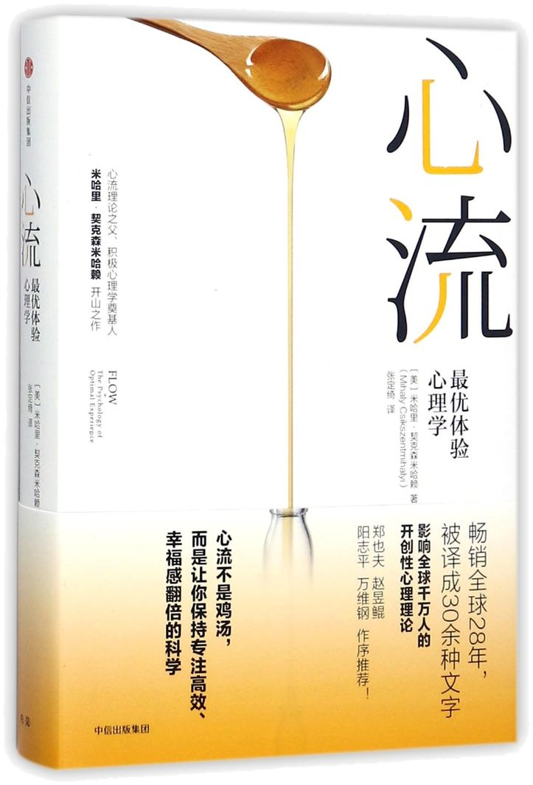

心流
最优体验心理学 · Flow
—— 让 AI 接过执行，人回到心流
千百合
老板IP商业重构师
20+ 畅销书出品人 / 译者
边玩边赚联合创始人
千百合
过得快
上一次你跟 AI 干活，干到忘了时间，是在干什么？
心流
THE PSYCHOLOGY OF OPTIMAL EXPERIENCE · 1990
米哈里 · 契克森米哈赖 Mihaly Csikszentmihalyi
幸福，
可以被设计

传呼机 · 每天随机响 8 次 · 几千人 · 几万条记录
开关一
挑战
≈ 能力
太难焦虑，
太容易无聊，
刚好有点难才心流
焦虑区
无聊区
心流通道
能力 →
↑ 挑战
开关二
目标清晰
说得清「做完是什么样」
做完是什么样
开关三
反馈及时
做一步，立刻看到
人 · 24 h
AI · 3 s
茶道就是倒茶
拿得起，
放得下
访谈秋萍先生 · 36 分钟
AI 负责剪辑，我负责看见
点视频 / 按 V 播放
讲完发群 · 两样礼物
01 这套 PPT 今天这一套，拿去照着讲
02 心流自测卡 三个问题，随时测手上的事
有特别需要书的伙伴，私戳我
—— 你若盛开，清风自来
千百合